General Info
This handout deals with electron pushing arrows: the movement of a pair of electrons from an electron rich site (a lone pair of electrons or a bond) to an electron poor site. Electron pushing arrows are used as a "bookkeeping" device to easily keep track of bonding and formal charges when interconverting resonance structures or depicting reactions. Used properly, they have tremendous value not just for understanding reactions, but also for for predicting chemical reactivity
There are two fundamental types of electron pushing processes:
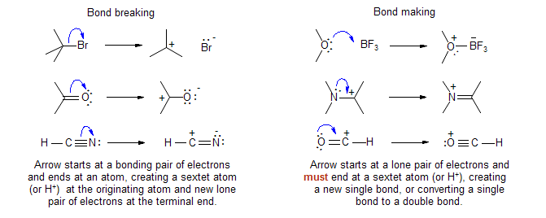In each case, the formal charge becomes one unit more positive at the starting atom and one unit more negative at the terminal atom.
A third very commonly used type, Bond Movement, is used to depict synchronous processes. A Bond Movement arrow starts at a σ or π bond, and ends at a sextet atom, forming a new σ or π bond:
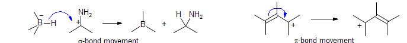It is really shorthand for consecutive or simultaneous bond breaking and bond making processes:
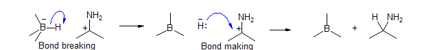When a Bond Making or Bond Movement arrow ends at an octet atom, then a Bond Breaking or a second Bond Movement processes has to "clear out" the extra pair of electron. If this cannot be done in an electronically reasonable fashion, then the process is not feasible. In this way a series of electron movements can be strung together. Again, all of the central carbons have no change in their charges or number of bonds, the first and last atoms change as for Bond Making and Bond Breaking processes. Note that the last arrow in a chain must be either a bond making arrow terminating at a sextet atom, or a bond breaking arrow.
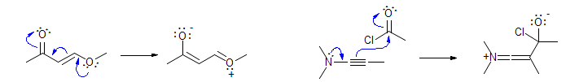Common problems with electron pushing
Watch for violations of the octet rule - always specifically draw in all of the atoms (including hydrogens and lone pairs) at any atom undergoing a transformation.
Draw arrows in the right direction (from donor to acceptor). We may think of a proton as attacking a double bond, but in electron-pushing terms, it is the double bond that is attacking the proton.
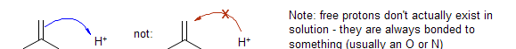Clearly distinguish formal positive charge and electron deficiency (a sextet atom). Cationic species like oxonium ions, ammonium ions and the like are usually NOT electrophilic at the atom bearing the formal positive charge. Each of the species below has electrophilic properties, but the positively charged O and N atoms are not electrophilic - it is the atoms attached to O and N that are electrophilic and thus subject to attack by bases and nucleophiles.
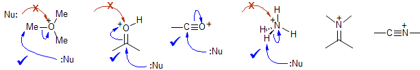However, this structure has to be relaxed for heavier elements like P and S which are capable of forming compounds that formally violate the octet rule
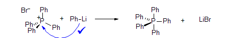Similarly, make a clear distinction between formal negative charges and lone pairs of electrons - they are not always synonymous. For boron and aluminum ate complexes, there are no lone pairs. Any donor character arises from the sigma bonds attached to the negatively charged atom.
For delocalized structures, you must pick a specific resonance structure to do any electron pushing - the "dotted line" formulas and circle structures for aromatic systems do not work, since bonds and electron pairs are not shown.
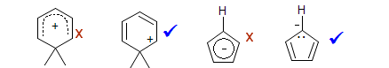Do not combine multiple steps into one long series of arrows. An experienced chemist may be able to get away with this sort of behavior, but such mechanisms are confusing and can contain fatal errors. If a reaction involves a true intermediate, your mechanism should reflect that.
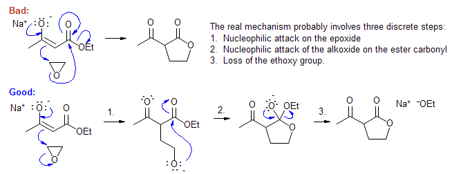Electron Pushing -- Acid Catalysis
Brønsted Acids: basically proton donors.
H3O+, H2SO4, HBr, HCl, H3PO4, etc
Lewis Acids: Neutral molecules or cations with a low lying vacant orbital. Often a metal with several electronegative ligands (F, Cl, Br, OTf, OAc, etc)
BF3, MgBr2, SnCl4, TiCl4, FeCl3, AlCl3, MeAlCl2, Me2AlCl, LiClO4, etc
Ag+ (special affinity for Cl, Br, I), Hg++ (special affinity for S, C=C, C≡C)
In addition to these inorganic Lewis acids, there are many chiral "designer" Lewis acids for initiating acid catalyzed reactions with asymmetric induction:
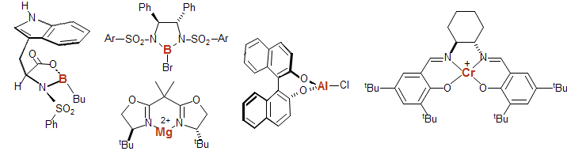Related to Lewis acids are powerful alkylating (Me3O+ BF4- and MeOTf) or silylating (Me3SiOTf) agents which initiate similar chemistry, but the first step is a methyl or silyl transfer.
Bronsted and Lewis acids catalyze reactions by attaching to nucleophilic sites (lone pairs on O, N, S, π-bonds) in molecules, and activating the molecule to attack by nucleophiles. The equilibrium favoring the product cation (and thus the rate of subsequent reactions) is determined by the strength of the acid and the stability of the cation produced (among other factors).
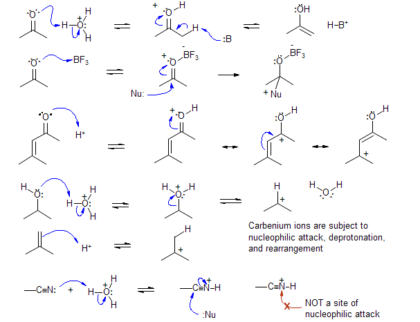Normally a positively charged atom is an electrophilic site only if it has a sextet of electrons or is otherwise electron deficient. Oxonium O and ammonium N atoms are not normally electrophilic centers. On the other hand, onium ions of the heavier elements (e.g., P, As, Se, Te, Br, I) are subject to nucleophilic attack.
Electrophilic catalysis is very closely related to oxidation.
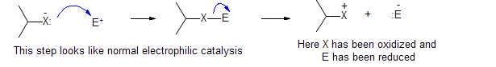Carbenium ions readily undergo rearrangement (Wagner-Meerwein)
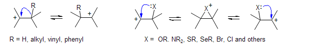Some named reactions which involve carbocation intermediates:
Wagner-Meerwein Rearrangement,
Pinacol Rearrangement,
Friedel-Crafts Acylation and Alkylation,
Bischler-Napieralski Reaction,
Pictet-Spengler Reaction,
Beckmann Rearrangement,
Tiffaneau-Demjanov Rearrangement,
Ferrier Rearrangement,
Nazarov Cyclization,
Pechmann Reaction,
Prins Reaction,
Ritter Reaction,
Leuckhart-Wallach Reaction,
Meyer-Schuster Rearrangement,
Rupe ReactionCarbenium Ions with unusual properties
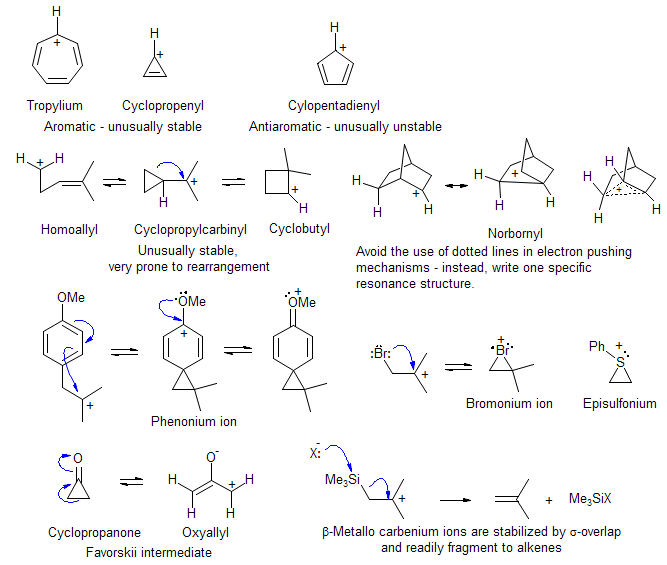Common Stabilized Carbenium Ion Reaction Intermediates
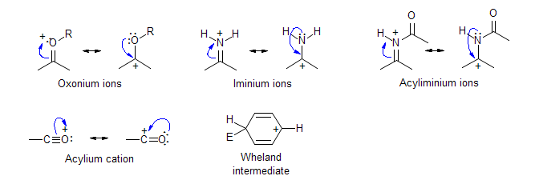Electron Pushing -- Basic and Nucleophilic Catalysis
A basic atom is one bearing a lone pair of electrons, or a strongly polarized sigma bond (such as C-Li or C-MgBr) or pi bond (such as an enamine).
Common bases: NaOH, NaOAc, Na2CO3, KOtBu, NaNH2, n-BuLi, tBuLi, NEt3, N(iPr)2Et (Hünig's base)
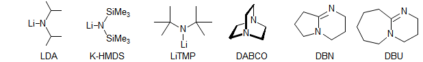Bases/nucleophiles interact with molecules in four main ways. All of these reactions are especially facile when the charge ends up on an electronegative heteroatom (O, N, S, Cl, Br, F)
1. Deprotonation of acidic hydrogens. To form finite amounts of the anionic product X- from X-H at equilibrium, the pKA of X-H must be comparable or lower than the pKA of B-H. To get reasonable rates of formation of the anionic product, the X-H bond being broken must have a pKA that is no more than about 10 pKA units higher than that of B-H; e.g., hydroxide ion (pKA of H2O ca 15) can effectively catalyze the formation ketone enolates (pKA of ketones ca 20) but not those of alkyl sulfones (pKA ca 30).
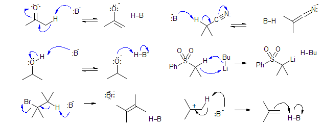2. Nucleophilic addition to C=X and activated C=C multiple bonds (e.g., Michael Reaction). These reactions also work best when a reasonably stabilized anion is being formed. The reverse reaction (retro-Michael) occurs readily if the nucleophile was a stabilized anion.
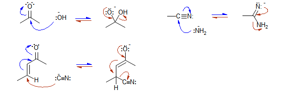3. Nucleophilic substitutions.
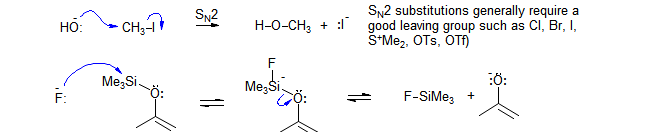It is permissible to violate the octet rule with heavier elements, but always be careful not to lose track of charges and electrons when you do so.
Aromatic nucleophilic substitution - requires strong anion stabilizing groups on the aromatic ring.
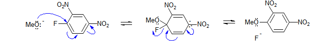4. Nucleophilic additions to sextet atoms:
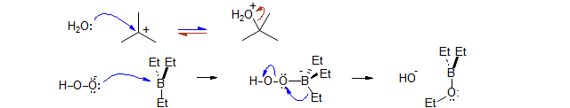Carbanion rearrangements are much less common than those of carbocations. Here are a few name reactions:
Ramberg-Backlund Reaction
Grovenstein-Zimmerman Rearrangement
Favorskii Rearrangement
Stevens Rearrangement
Wittig ([2,3] sigmatropic) Rearrangement
Carbanions with unusual properties:
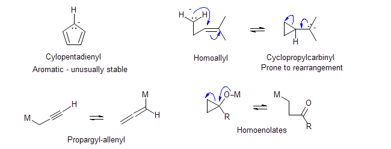An Example Questions is available as a PDF file.
An Example Questions-Answers is available as a PDF file.
- 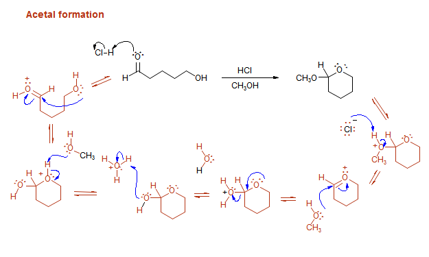
- 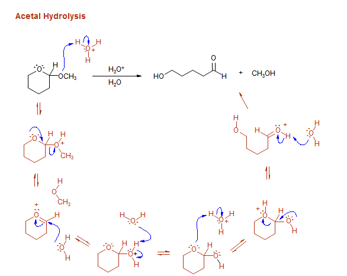
- 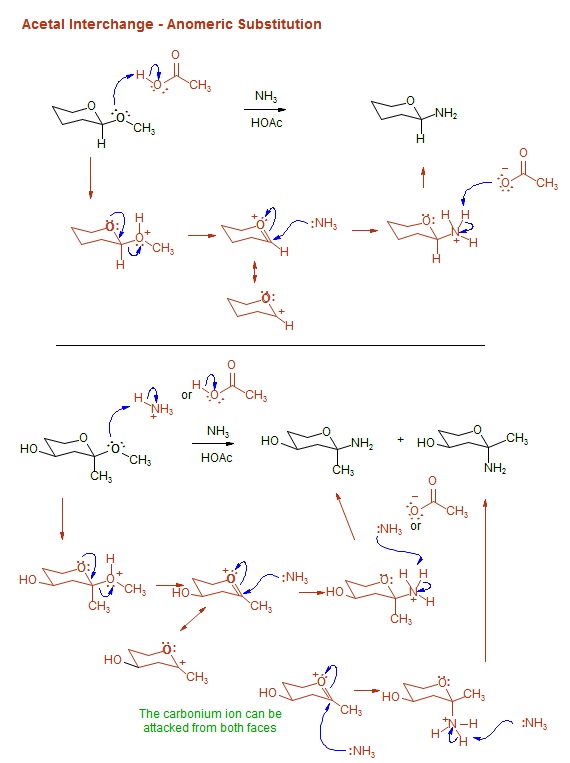
- 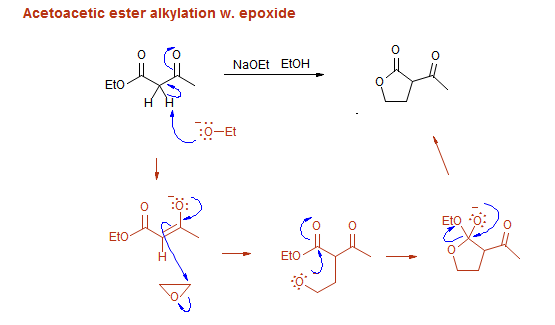
- 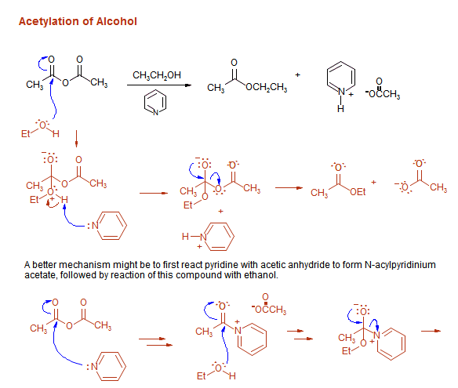
- 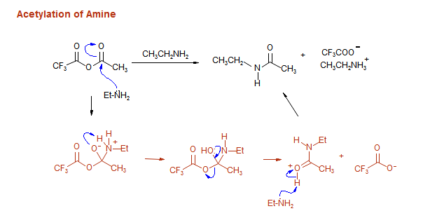
- 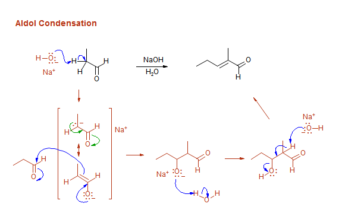
- 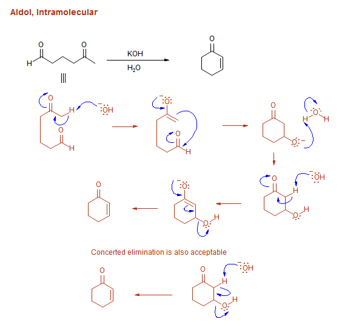
- 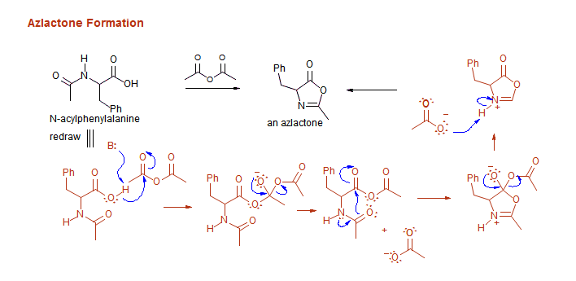
- 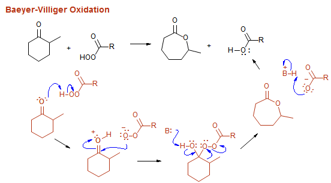
- 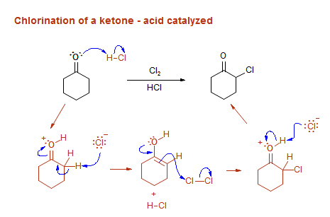
- 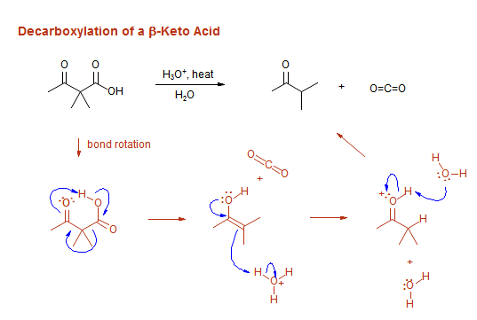
- 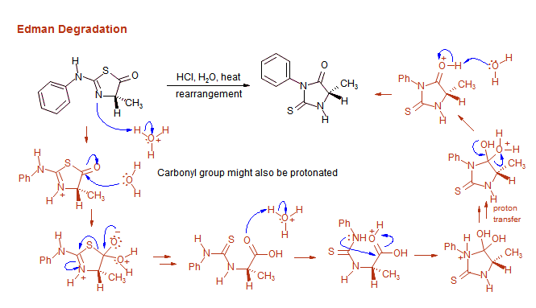
- 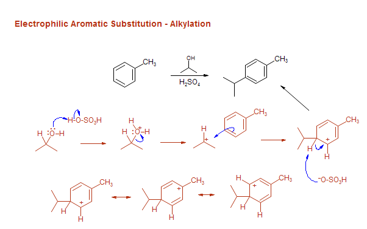
- 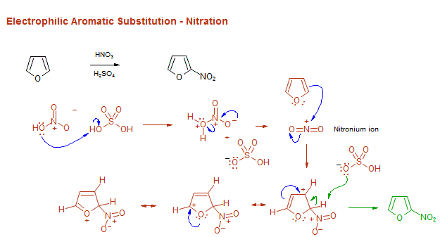
- 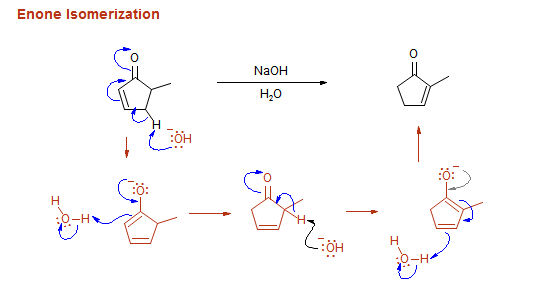
- 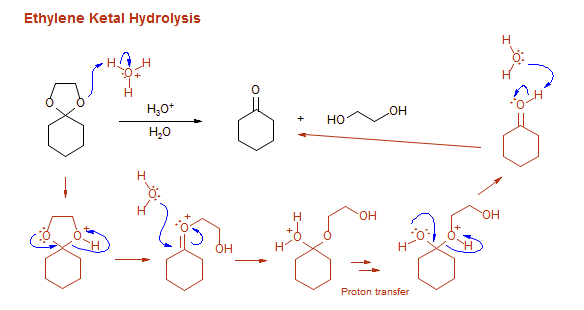
- 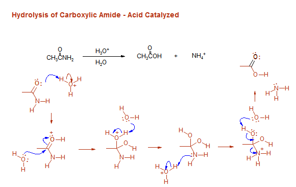
- 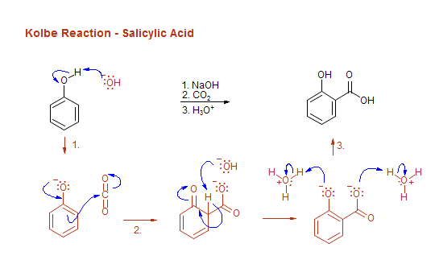
- 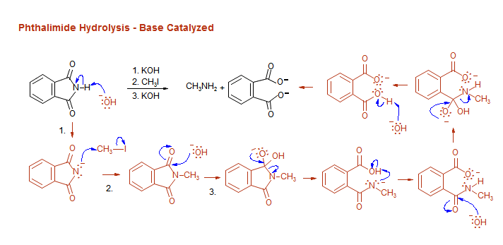
- 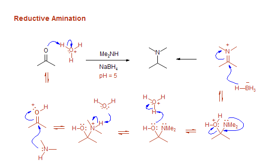
- 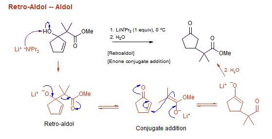
- 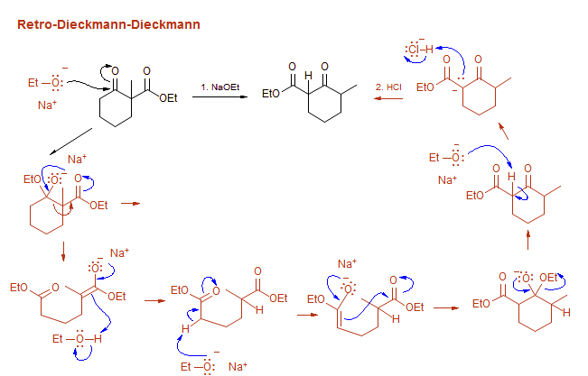
- 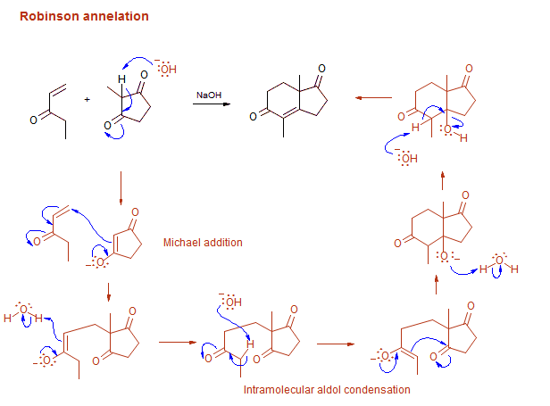
- 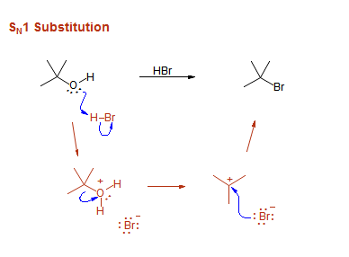
- 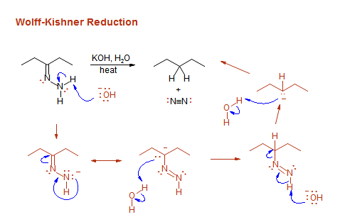